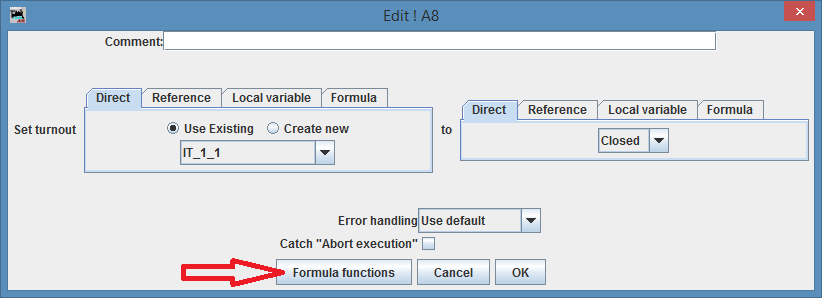
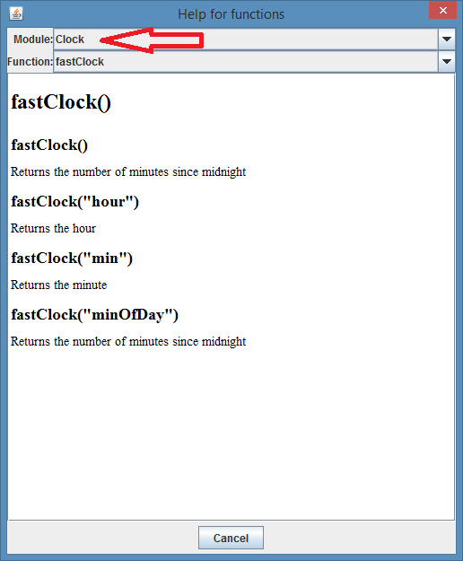
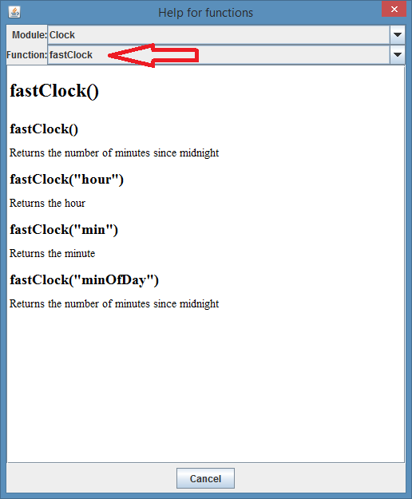
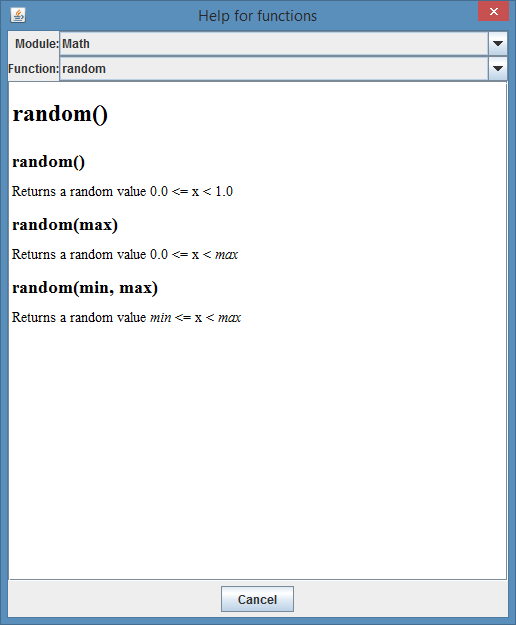

LogixNG Tutorial - Chapter 6FormulaLogixNG has native support for complex calculations with the tool "Formula". Formula supports almost all the Java operators and you can use local variables and functions with formula. In many cases, like the action Turnout, you can choose to use formula to get the turnout you want to act on, or to get the new state you want to set.Local variables, which are explained in chapter 8, can be used directly in formula. So if you have a local variable index, you can for example have the formula "IT" + index, which adds the string "IT" and the value of index. This can be useful if you for example want to set all the turnouts IT1, IT2, IT3, ..., IT10 to thrown. You can then use the action For to iterate from 1 to 10 and to set each of these turnouts to thrown. The Formula expressionsThere are three expressions for formula: Analog Formula, Digital Formula and String Formula. They all work the same way, except that Analog Formula returns a floating point number, Digital Formula returns a boolean value (true or false), and String Formula returns a string. The expression formula can have child expressions, for example reading an analog value or reading the state of a sensor. You use the result of the child expressions by using the name of the female socket in the formula. So if you have an expression Formula which has a child E1 to which an expression Sensor is connected, you can use the result of the expression Sensor in the formula by the identifier E1 which points to the female socket and its connected expression.OperatorsFormula supports most of the Java operators. A list of the Java operators, together with the priority of them, is on this page.Currently supported operators are:
Note that for the calculations to work, each operand must have the correct type. For example, if you have a memory IM1 that has a number as a string and you want to subtrack from it, like IM1 - 1, you need to convert the string in IM1 to an integer or a float. Example: int(IM1) - 1 or float(IM1) - 1. FunctionsFormula supports functions, like sin(x) and random(). Some functions takes one or several parameters. A function has an identifier, for example "sin", followed by a left parantheses, optional one or several parameters separated by comma, and then closed by a right parantheses.The dialog boxes for editing an action or expression, and the dialog box for editing variables, has a button "Formula functions". If you click on that button, you get a new dialog box that shows the functions that are available and the documentation on each of them. One may notice that there is several modules with one or two functions in each module. For example, the module Math has the functions random() and sin(). The reason for so many modules for so few functions is that the number of functions is expected to grow. For example, the Math module should have cos(), tan(), atan() and sqrt(), but neither of these are implemented yet. For JMRI developers: The functions are defined in the package jmri.jmrit.logixng.util.parser.functions and each module has its own Java class. Each function is its own class that implements the Function interface. Documentation of the functionsTo make it easier to use the functions, each function has some documentation for it. Each action/expression has a button Formula functions that opens a dialog box with documentation of the functions.
 The functions are grouped in modules to make it easier to find the functions. Select the module you are interested in.
 Then select the function you are interested in. In this case, the function fastClock() take a string parameter which can have any of the values hour, min or minOfDay.
 Some functions, for example the function random(), can take different numbers of parameters. The function random() takes either a maximum value and returns a random value 0.0 <= x < max. Or it takes a minimum value and returns a random value min <= x < max.
Add new function with JythonIt's possible to create a new function i Jython to be used by formula. The code below gives an example that you can use as a template. A new function is added by creating a new class that extends the class Function and that implements these methods:
Example Jython script that defines the function jythonTest that takes one floating point parameter:
Calculate the functionThe function calculate takes a number of arguments as a List<ExpressionNode>. We first checks the number of arguments by calling the method size() and if that's correct, we get the arguments by calling the method get(index) there "index" is the index of the argument.But to do something useful with the arguments, we need to calculate each argument we want to use. We do that by calling the method calculate on each argument we want to use. We then do the calculation, which in this case multiplies the first argument with 3.4 and then returns the value. Important!A function may set turnouts, sensors, and other things on the layout. You may for example create the function setTurnout(turnout, newState). But it's important to remember that a ConditionalNG runs on a separate thread so if you set a turnout or a sensor, you must do that on the layout thread. Formula is always run on the thread that the ConditionalNG is run on, so if a function updates the layout or the GUI, it needs to do it on the layout thread or the GUI thread.See chapter Chapter 13 - Threads for more information of LogixNG threads.
|